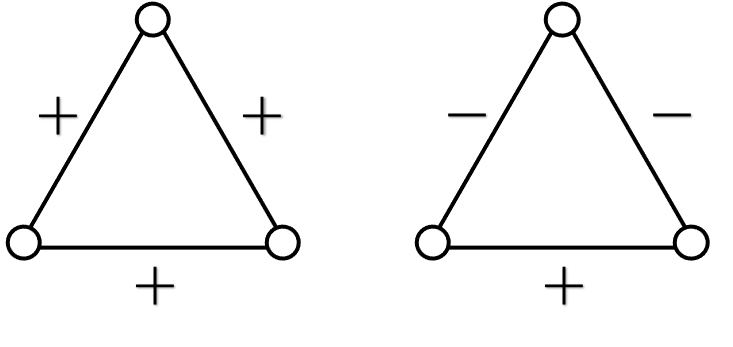
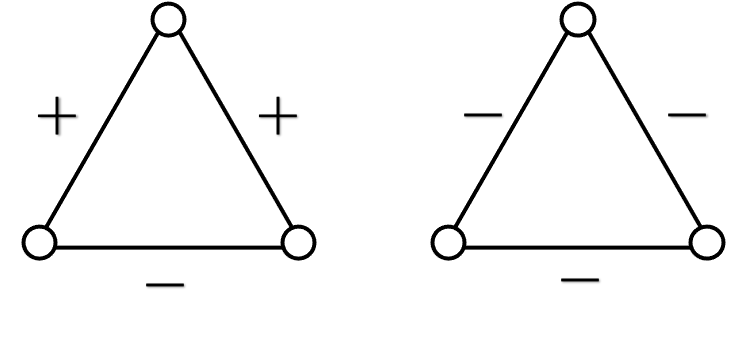
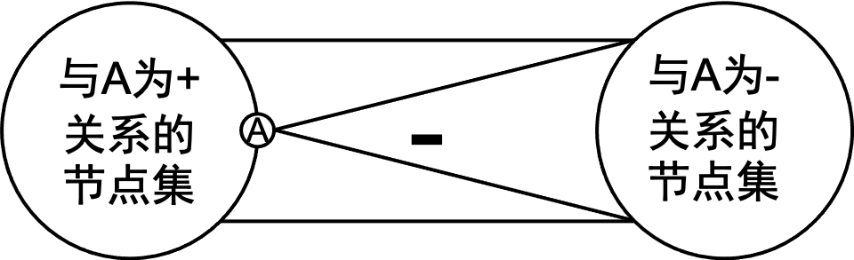
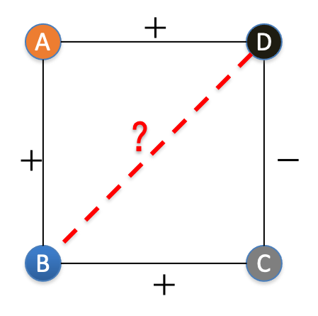
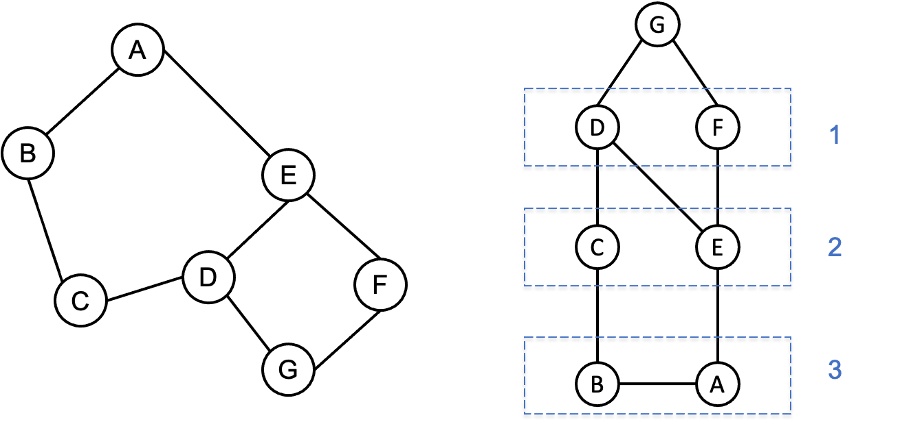

<< 返回本书主页<< Back to the afterword page
3 极化关系下网络结构的稳定平衡性
Jan. 2022
3.1 背景问题
本讲的主题是，社会网络在什么情况下是平衡的，什么情况下不是？
在一个社会中，两个人的关系可能是友善的，也可能是互相抱有敌意的。为了模拟这种现象，我们可以把社会网络中某两个节点之间的边，标注为正关系（友）或负关系（敌）。对于网络中的一个三角结构，我们就可以讨论它是否平衡。
- 平衡结构有以下两种。这在直观上也很好理解，如果三个人互为好友（左图），或者两个关系很好的人同时看不上第三个人（右图），是没有旁的因素打破这种关系的，这就可以长时间维持。

- 不平衡结构也是以下两种。如果两个人关系不好但有一个共同朋友（左图），这个共同朋友就很难做人，要么倒向其中一边，要么努力让他俩冰释前嫌。如果三个人互有敌意（右图），敌意稍轻的两个人就有动力联合起来，共同对付第三个人。

在一个社会网络中，如果所有三角关系都是平衡的，那么这个网络就是平衡的；否则，总有力量改变其中的某个三角关系，从而影响网络结构的平衡性。这个定义可以进一步操作化——结构平衡定理：
一个边标注完全图是平衡的，当且仅当它的所有边都是“＋”边或节点集能划分为两个子集，子集内部都是“＋”边，子集之间都是“－”边。
也就是说，这一网络要么全部是正关系，要么可以表示为如下的结构：

简单的归谬法就可以证明这一定理。如果左边的关系中存在负关系，设节点
可是，社会网络中并非所有节点之间都有边，不是所有边都身处一个或多个三角关系中，逐个考察三角关系的方法不再适用。对于不完全网络图，我们如此理解它的平衡状态：不会因为增加一条标注边，出现不可避免的不平衡三角子图。例如下图，当两个本无关系的人

也就是说，一个平衡的不完全网络图，可以通过补充缺失的边（带极性），成为一个平衡的完全网络。根据结构平衡定理，平衡的不完全网络图的定义也可以进一步操作化：
若已有边不全是“＋”，则节点可以分成两组，组内边均为“＋”，跨组边均为“－”。
3.2 计算实践：网络结构平衡性的判断
3.2.1 作业描述与算法思路
接续上文，要判断不完全网络图是否平衡，我们已经有了一个操作化定理：
若已有边不全是“＋”，则节点可以分成两组，组内边均为“＋”，跨组边均为“－”。
但这距离算法化还有一定距离。为了算法化，我们还要进一步用到图论的知识：一个含有奇数个“－”的圈的节点不能被分成这样两组：每一组内部的关系都为“＋”，跨组的边均为“－”。
也就是说，如果图中存在一个含有奇数个“－”的圈，就没有可能将其节点安排到两个对立阵营中；反过来，若没有那样的圈，则总是可以将所有节点做两个阵营的划分。根据上述操作化定理，如果图中存在一个含有奇数个“－”的圈，该图就不平衡；反之就平衡。
为了更方便地判定网络中是否存在含有奇数个“－”的圈，我们可以整体考虑内部边均为“＋”的节点子集，因为它们并不会影响自己所在的圈有多少个“－”。把内部边均为“＋”的节点集合为一个“连通分量”，从而把网络简化为“简约图”。这样，简约图里所有的边都是“－”边。例如，下图左侧的不完全社会网络（红边为“＋”、黑边为“－”），就可以表示为右侧的简约图。

现在，我们只需要考虑简约图里有没有长度为奇数的圈。判定方式是“广度优先搜索”（Breadth First Search or BFS）。在下图的例子中，对左侧的图以节点

从广度优先搜索的结果可以看到，圈的形成有两种方式：
- 下位节点（层数更高的节点）与两个上位同层节点都有边（如
- 同层的两个节点之间有边（如
这样，要判断不完全网络图是否平衡，我们只需要BFS结果中是否存在同层边。
3.2.2 编程实现与要点说明
首先，我们还是需要调用读取数据文件的函数，把邻接矩阵存储在一个numpy 2d-array array里。代码略，与1.2.1.2类似。一个数据文件的例子如下：
xxxxxxxxxx161输入矩阵文件名：./input/balance1.txt2[[ 0 1 1 0 0 0 0 0 0 0 0 0 0 0 0]3[ 1 0 1 -1 1 0 0 0 0 0 0 0 0 0 0]4[ 1 1 0 0 0 -1 0 0 0 0 0 0 0 0 0]5[ 0 -1 0 0 0 0 -1 0 -1 0 0 0 0 0 0]6[ 0 1 0 0 0 -1 0 0 0 0 0 0 0 0 0]7[ 0 0 -1 0 -1 0 0 1 0 0 -1 0 0 0 0]8[ 0 0 0 -1 0 0 0 0 0 0 0 1 0 0 0]9[ 0 0 0 0 0 1 0 0 0 0 -1 0 0 0 0]10[ 0 0 0 -1 0 0 0 0 0 0 0 1 0 0 0]11[ 0 0 0 0 0 0 0 0 0 0 -1 1 0 0 0]12[ 0 0 0 0 0 -1 0 -1 0 -1 0 0 -1 -1 0]13[ 0 0 0 0 0 0 1 0 1 1 0 0 1 0 0]14[ 0 0 0 0 0 0 0 0 0 0 -1 1 0 0 -1]15[ 0 0 0 0 0 0 0 0 0 0 -1 0 0 0 -1]16[ 0 0 0 0 0 0 0 0 0 0 0 0 -1 -1 0]]
第一步，我们先要把网络简化为简约图。先写一个函数cluster，找出节点group，其中所有边都是“＋”边。这个函数用到了递归，我先以
xxxxxxxxxx71def cluster(array, i, group):2 group.append(i)3 for j in range(len(array[i])):4 if j not in group:5 if array[i][j] == 1:6 cluster(array, j, group)7 return group循环调用cluster函数，每次的搜索起点是还未归入某一连通分量的节点，直到把网络中所有节点都归入某一连通分量。结果存储在groups中。
xxxxxxxxxx151groups = []2cnt = 03start = 04rest = [i for i in range(n)]5while True:6 groups.append([])7 groups[cnt] = cluster(array, start, groups[cnt])8 for j in groups[cnt]:9 rest.remove(j)10 if rest == []:11 break12 start = rest[0]13 cnt += 114print('连通分量如下：')15print(groups)以下是一个输出结果的例子：
xxxxxxxxxx21>>> 连通分量如下：2>>> [[0, 1, 2, 4], [3], [5, 7], [6, 11, 8, 9, 12], [10], [13], [14]]
寻找连通分量的过程，并未一一检查内部的所有边。以特定次序找“＋”得出的节点集合，在另一种找边的次序中可能存在“－”边。因此我们还需要重新检查一下连通分量内部是否有“－”边。如果有的话，我们可以直接确定这一网络不平衡，因为这一连通分量内部有“＋＋－”的不稳定关系。
xxxxxxxxxx131innerGroup = False2for group in groups:3 for a in range(len(group)):4 node1_1 = group[a]5 if innerGroup == False:6 for node1_2 in group[a+1:]:7 if array[node1_1][node1_2] == -1: 8 innerGroup = True9 break10if innerGroup == True:11 print('★★连通分量内部有负边，该网络不平衡。★★')12 print('★★★★该网络不是平衡网络。★★★★')13 sys.exit(0)如果连通分量内部没有“－”边，我们就可以使用groups的信息生成简约图array2。我们检查连通分量之间是否有边（只可能是“－”边），从而确定表示简约图的矩阵在每一格应该填什么。有边就填1，无边就填0。
xxxxxxxxxx171array2 = np.zeros((cnt+1,cnt+1))2for i in range(len(groups)):3 group = groups[i]4 for j in range(i+1, len(groups)): 5 next = groups[j]6 edgeExist = False7 for node1 in group:8 if edgeExist == True:9 break 10 for node2 in next:11 if array[node1][node2] == -1: # 有边12 array2[i][j] = 1 # 定义有边为113 array2[j][i] = 114 edgeExist = True15 break16print('简约网络图如下：')17print(array2)xxxxxxxxxx81>>> 简约网络图如下：2>>> [[0. 1. 1. 0. 0. 0. 0.]3>>> [1. 0. 0. 1. 0. 0. 0.]4>>> [1. 0. 0. 0. 1. 0. 0.]5>>> [0. 1. 0. 0. 1. 0. 1.]6>>> [0. 0. 1. 1. 0. 1. 0.]7>>> [0. 0. 0. 0. 1. 0. 1.]8>>> [0. 0. 0. 1. 0. 1. 0.]]
接着，我们对简约图做广度优先搜索：输入起点节点，输出搜索结果（每一层有哪些节点layers，节点之间的边有哪些layerCon）。这一过程依靠函数bfs完成。
xxxxxxxxxx91layers = []2layerCon = []3counted = [0] # 已经被搜索到的节点4def bfs(i_list, layerNum, array = array2):5 global layers6 global layerCon7 global counted8 layers.append([]) # 新建一层9 layerCon.append([])搜索时，我用到了递归，搜索到下一层的节点j_list后，再以j_list里的节点为起点搜索再下一层，直到搜不到更多节点j_list == []。
x1 j_list = [] # 下一层的节点2 for i in i_list:3 layers[layerNum].append(i)4 if len(counted) == len(array):5 break6 for j in range(len(array[i])):7 if j not in counted:8 if array[i][j] == 1:9 layerCon[layerNum].append([i, j])10 j_list.append(j)11 j_set = set(j_list)12 j_list = list(j_set) # 去除重复节点13 for j in j_list:14 counted.append(j)15 layerNum += 116 if j_list != []:17 bfs(j_list, layerNum) # recursion, start from the next layer18 return layers, layerCon19
20layers, layerCon = bfs([0], 0)21print('layers:')22print(layers)23print('层间边：')24print(layerCon)xxxxxxxxxx41>>> layers:2>>> [[0], [1, 2], [3, 4], [5]]3>>> 层间边：4>>> [[[0, 1], [0, 2]], [[1, 3], [2, 4]], [[3, 6], [4, 5]], []]
有了搜索结果，我们就可以两两检查每层内的节点，判断层间边是否存在。
xxxxxxxxxx191innerLayer = False2
3for layer in layers:4 layerI = layers.index(layer)5 for x in range(len(layer)):6 i = layer[x]7 for j in layer[x+1:]:8 if array2[i][j] == 1: # i与j之间有层间边9 innerLayer = True 10
11if innerLayer == True:12 print('★★层内有边，该网络不平衡。★★')13else:14 print('无层内边。')15
16if innerLayer == False:17 print('★★★★该网络为平衡网络。★★★★')18else:19 print('★★★★该网络不是平衡网络。★★★★')存在层内边时，我们还可以用一个函数circleSpotter找出奇数圈：输入两个起点节点编码（初始为存在层内边的两个节点编码i和j）、它们在哪一层layerI、已经找到的奇数圈节点oddCir（初始为[i,j]）、广度优先搜索的结果layers和layerCon；返回所有奇数圈节点。
xxxxxxxxxx11def circleSpotter(i, j, layerI, oddCir, layerCon = layerCon, layers = layers):定义一个局部函数nodeAdder，它的作用是，当我们找到起点节点所在的层内边edge后（如oddCir当中，并把
xxxxxxxxxx61 def nodeAdder(edge, x):2 for node in edge:3 if node != i and node in layers[layerI - 1]:4 oddCir.append(node)5 i2 = node6 return oddCir, i2给定i和j，分别调用nodeAdder函数，沿着i和j所在的层间边，确定下一组起点节点（在更高层）i2和j2。
xxxxxxxxxx131 i_counted = False2 j_counted = False3 for edge in layerCon[layerI - 1]:4 if i in edge:5 if i_counted == True:6 continue7 oddCir, i2 = nodeAdder(edge, i)8 i_counted = True9 elif j in edge:10 if j_counted == True:11 continue12 oddCir, j2 = nodeAdder(edge, j)13 j_counted == True以i2和j2为新的起点节点继续搜索（递归），直到两条搜索线路汇集于同一点i2 == j2。
xxxxxxxxxx61 layerI -= 12 if i2 != j2:3 circleSpotter(i2, j2, layerI, oddCir) # recursion, start from upper layer4 oddCirSet = set(oddCir)5 oddCir = list(oddCirSet) # make sure there aren't duplicates6 return oddCir对于每一条层间边，我们都可以调用circleSpotter函数，找出它所在的奇数圈。下述代码中自oddcnt += 1始。
xxxxxxxxxx121for layer in layers:2 layerI = layers.index(layer)3 for x in range(len(layer)):4 i = layer[x]5 for j in layer[x+1:]:6 if array2[i][j] == 1: 7 innerLayer = True 8 oddcnt += 19 oddCirs.append([i, j])10 oddCir = oddCirs[oddcnt]11 oddCir = circleSpotter(i, j, layerI, oddCir) 12 oddCirs[oddcnt] = oddCirxxxxxxxxxx41>>> ★★层内有边，该网络不平衡。★★2>>> 构成奇数边数的圆的节点如下：3>>> [[0, 1, 2, 3, 4]]4>>> ★★★★该网络不是平衡网络。★★★★